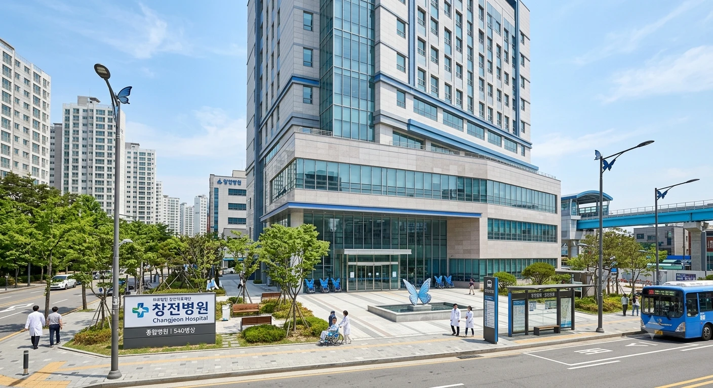

[창전병원 전경]| 명칭 | 의료법인 창전의료재단 창전병원 |
|---|---|
| 개원 | 1989년 7월 15일 |
| 종별 | 종합병원 |
| 병원장 | 진백선 (의학박사·정신건강의학과 전문의) |
| 명예 병원장 | 쿠라타 마시로 |
| 소재지 | 효빈광역시 창전구 모포로 84 (창전역 1번 출구 도보 3분) |
| 병상 수 | 540병상 |
| 대표 전화 | 079-854-0219 |
| 웹사이트 | 창전병원 공식 홈페이지 |
효빈광역시 최고의 부촌이자 문화예술의 중심지인 창전구를 든든하게 지키고 있는 거점 종합병원.
의료 인프라가 빵빵한 효빈대학교병원이 서구에서 대학병원 특유의 묵직한 중증 진료를 담당한다면, 창전병원은 창전지구 영앤리치 주민들과 문화예술계 종사자들의 고품격 프리미엄 건강검진 및 멘탈 케어를 전담하고 있다. 창전구 특유의 고급스럽고 몽환적인 감성과 쿠라타 마시로 유니버스가 결합하여, 대한민국에서 가장 기묘하고 아름다운 인테리어를 자랑하는 병원으로 꼽힌다.
1989년 7월 1일, 청엽구 창전출장소가 창전구로 전격 분구·승격되면서 자치구의 위상에 걸맞은 대형 종합병원의 필요성이 대두되었다. 이에 효빈시청과 대형 의료재단이 뜻을 모아 분구 보름 뒤인 1989년 7월 15일 현대식 의료 장비를 갖춘 '창전병원'을 전격 개원했다.
2000년대 들어 창전동 일대에 주상복합 대단지가 들어서고 IT·문화예술계의 고소득 전문직(Young Rich)들이 대거 유입되면서, 병원 역시 단순 진료를 넘어 고품격 예방의학과 에스테틱, 정신건강의학 융합 센터를 구축했다. 2010년대 후반에는 병원 리모델링 과정에서 창전구의 상징적인 밴드인 Morfonica(모르포니카)의 세계관을 대폭 수용하며 전 세계 덕후들의 지갑을 합법적으로 털어가는(?) 성지 순례 병원으로 완전히 떡상했다.
병원의 핵심 테마가 Morfonica의 보컬 쿠라타 마시로에게 맞춰져 있다. 명예 병원장 직함도 마시로에게 헌정되었으며, 실제 병원장인 진백선 박사 역시 알아주는 모니카 오시(?)라 병원 시스템 곳곳에 마시로 밈이 정교하게 심어져 있다.
<Daylight> 뮤직비디오처럼 날갯짓을 하며 전진하는 묘한 기분을 느낄 수 있다. 최고급 호텔 로비나 코엑스 별마당 도서관을 연상케 하는 고품격 인테리어가 특징이다.
창전병원은 창전구의 자부심에 걸맞게 실력파 전문의들과 헌신적인 직원들로 구성되어 있다. 다만 Morfonica의 영향인지 의사와 간호사들이 환자보다 더 감수성이 풍부하고 소심한(?) 독특한 원내 문화를 자랑한다.
부촌의 중심답게 깔끔한 대중교통 연계를 자랑한다.
과거 창전역 락카 테러 미수 사건 당시, 범인이 "마시로가 나를 깔아본다"며 발광하다 역사학과 학생들에게 제압되어 이곳 창전병원 응급실로 실려 온 적이 있다. 당시 당직이었던 정신과 전공의가 범인의 상태를 진단하며 "마시로 성우님 말씀이 맞네요. 지능 수준이 의학적으로 현저히 낮은 상태(Baka)라 치료가 불가능합니다."라며 싸늘한 저음으로 팩트 폭행을 날려 수치심을 배가시켰다는 전설이 전해진다.
간호사들이 주사나 링거를 놓을 때 환자가 무서워하면 "지, 지금은 무리야! 노래만으로도 벅찬걸..."이라는 마시로의 대사를 본떠 "지, 지금은 무리(로 아프지 않게) 놓아드릴게요...!"라고 소심하게 위로해 주는 묘한 하이개그 전통이 있다. 처음 온 외래 환자들은 주삿바늘을 들고 떨리는 목소리로 "무리... 무리..." 중얼거리는 간호사를 보고 공포에 질리지만, 0.1초 만에 통증 없이 혈관을 꽂아 넣는 신의 손놀림을 체감하고 감탄하게 된다.
매년 2월 19일(명예 병원장 쿠라타 마시로의 생일)에는 병원 구내식당에서 모든 환자와 직원에게 특식으로 소고기를 쏟아부은 비프 스튜를 무한 리필해 주며, 외래 접수처에서 푸른 나비 모양의 책갈피를 기념품으로 증정한다. 이날만 되면 멀쩡한 효빈시 덕후들이 소화불량이나 가짜 기침 핑계를 대며 감기약을 타러 오전 7시부터 오픈런을 뛰는 기현상이 벌어져 원무과 전산망이 마비될 지경이다.
제22대 총선 창전구 갑 선거에서 국민의힘 후보로 출마했다가 5.2%라는 경이로운 참패를 당한 윤재훈이, 극심한 분노 조절 장애와 급성 홧병으로 뒷목을 잡고 쓰러져 창전병원 VIP 응급실로 실려 온 사건이다. 윤재훈은 베드에 누워 침을 튀기며 "선관위가 내 득표율을 조작했다! 내가 계엄사령관이다!"라며 간호사들에게 고래고래 악을 썼다.
이에 등장한 병원장 진백선 박사는 차분하게 청진기를 윤재훈의 가슴에 얹더니 깊은 한숨을 쉬며 말했다. "후에에... 환자분, 5.2%의 현실을 부정하시면 뇌혈관이 터져서 진짜로 천국 계엄군을 만나실 수 있습니다. 저희 병원 명예 병원장님도 '나 같은 게 감히...' 하며 괴로워하지만 최소한 남 탓은 안 하시거든요? 환자분의 자존감은 마이너스 500점입니다." 진 박사는 그에게 진정제 대신 따뜻한 비프 스튜 국물과 푸른 나비 모빌을 처방했고, 윤재훈은 창전동 사모님들의 싸늘한 비웃음 속에서 창피함을 이기지 못하고 2시간 만에 야반도주하듯 퇴원했다.
효빈시의회 복지환경위원회 소속이자 자타공인 '스피리추얼 임상심리사'인 노정미 시의원이 청년 정신건강 지원 조례안 실태 조사를 위해 창전병원 5층 멘탈 부스터 클리닉을 공식 방문했다. 심리학 석사 출신인 노정미는 진백선 원장과 마주 앉아 "진 원장님, 환자들의 유리멘탈을 보듬는 것도 좋지만 가끔은 타로 카드의 신령한 파워로 기운을 북돋아 줘야 한데이~"라며 타로 덱을 꺼내 들었다.
이에 진 원장은 지지 않고 푸른 만년필을 꺼내 "후에에... 의학적 인지행동치료가 우선입니다만..."이라며 나비 모양 심리 분석표로 맞불을 놓아 즉석에서 세기의 독심술 배틀이 벌어졌다. 1시간의 팽팽한 심리전 끝에 승부가 나지 않자, 노정미는 특유의 영적인 음흉한 미소를 지으며 진 원장의 어깨를 툭 치고는 "원장님 멘탈이 제일 유리멘탈이네! 언니가 스피리추얼 와시와시 맥스로 기 채워줄까?!"라며 장난을 쳤다. 깜짝 놀란 진 원장이 "후에에엑?! 성희롱은 의학적으로 절대 불가입니다!!"라며 진료실 책상 밑으로 숨어버려 전 참관단이 뒤집어졌다.
안천구 리에라몰의 장녀이자 인기 스트리머 임은혜(후지시마 메구미 오시)가 창전병원의 몽환적인 인테리어가 예쁘다는 소문을 듣고, 순백의 환자복 스타일 원피스를 입은 채 틱톡 라이브를 켜고 병원에 잠입했다. 은혜는 로비 분수대 앞에서 "여러분~ 은혜가 창전병원에서 병약 미소녀 모니카 코스프레 중이에요 큥! 아파서 쓰러질 것 같아요 큥..."이라며 가련한 연기를 펼치며 도네이션을 유도했다.
그러나 1층 카페테리아에서 풍겨오는 갓 끓인 럭셔리 비프 스튜 냄새를 맡는 순간, 그녀의 가련한 콘셉트는 산산조각이 났다. 눈이 돌아간 임은혜는 식판을 들고 달려가 비프 스튜를 무려 3그릇이나 연달아 바닥까지 긁어먹었고, 이를 직관하던 시청자 5만 명이 "병약 미소녀가 아니라 마라톤 선수 식성이다", "하스노소라식 폭풍 먹방 ㅋㅋㅋ"이라며 조롱 섞인 후원금을 폭격했다. 결국 병원 로비에서 소란을 피운 죄로 백서연 수간호사에게 귀를 잡힌 채 "환자 코스프레 금지!" 훈계를 듣고 쫓겨나는 결말을 맞았다.
창전동 토박이자 창전구 제3선거구 다선 시의원인 성선민(1953년생) 의원이 연례 정기 건강검진을 위해 창전병원 2층 VIP 센터를 찾았다. 백전노장의 근엄한 풍채를 지닌 성 의원이 진료실에 들어서자, 담당 내과 과장이 성 의원의 카리스마에 기가 질려 "저... 의원님... 폐활량 검사를 하셔야 하는데... 혹시... 무리가 되지 않으신다면... 살짝만 불어봐 주실 수 있을까요...?"라며 기어들어가는 목소리로 조심스럽게 마우스피스를 건넸다.
정치 인생 반평생 동안 호통과 사자후에 익숙했던 성선민 의원은 의사의 지나치게 가련하고 소심한 태도에 어이가 없어 "허허! 의사 양반, 동네 병원이 환자 눈치를 봐서 어쩌나! 내가 사람 잡아먹나? 시원하게 소리 지르며 검사하시오!"라며 껄껄 웃음을 터뜨렸다. 성 의원은 검진 후 병원 행정과장에게 "친절하고 세심해서 좋은데, 의사들 간 떨어질까 봐 무서워서 큰소리도 못 치겠다"라며 격려금과 함께 창전동 주민센터 다과 세트를 기부하고 돌아갔다.
효빈대병원 신경외과에서 36시간 연속 당직을 서고 멘탈이 너덜너덜해진 서진희(니시키노 마키 도플갱어) 레지던트가, 맛없는 효빈대 구내식당 밥에 분노하여 최고급 비프 스튜를 먹겠다는 일념 하나로 택시를 타고 창전병원 12층 스카이라운지로 원정을 왔다. 의사 가운을 가방에 쑤셔 넣고 명품 선글라스를 낀 채 완벽한 VIP 환자 행세를 하며 스튜 2인분과 토마토 샐러드를 주문해 폭풍 흡입하고 있었다.
그러나 때마침 라운지 순회를 돌던 진백선 원장이 그녀의 날카로운 고양이 눈매와 스크럽복 바지 밑단을 알아보고 다가왔다. "어라? 효빈대병원 신경외과 서진희 전공의 아니신가요...?" 정체가 들통나자 얼굴이 홍옥처럼 폭발한 서진희는 숟가락을 떨어뜨리며 "하아?! 의미를 모르겠네! (나니소레? 이미와칸나이!) 내, 내가 널 보러 온 거 아니거든?! 그냥 창전구 토마토 작황이 어떤지 시장조사 차원에서 들른 것뿐이야! 붸에에!!"라며 괴성을 지르고 계산대에 5만 원짜리 세 장을 던진 채 엘리베이터로 빛의 속도로 도망쳤다.
윤재훈의 낙선에 앙심을 품은 소수의 극우 유튜버 일당이 "창전구는 친북 좌파 오타쿠 소굴이다!"라며 확성기를 들고 창전병원 로비에 난입해 Morfonica 나비 조형물을 부수려 난동을 부린 돌발 테러 사건이다. 로비에 있던 환자들과 소아과 어린이들이 겁에 질리자, 재활의학과 물리치료사들과 건장한 남자 간호사들이 분노를 터뜨렸다.
그들은 소아과용 '푸른 나비 날개 특수 휠체어' 8대를 일렬로 배치하더니, 맹렬한 스피드로 휠체어 편대를 밀며 진상 무리를 향해 정면 돌진(Butterfly Charge)을 감행했다. 단단한 알루미늄 범퍼와 나비 날개에 정강이를 걷어차인 테러범들은 비명을 지르며 바닥에 나뒹굴었고, 뒤이어 도착한 창전경찰서 순찰대에 전원 현행범으로 수갑이 채워졌다. 마시로의 소심함을 얕봤다가 나비 날개 물리 치료의 참맛을 본 이 사건은 병원 에브리타임에서 '창전 나비 대첩'으로 영원히 박제되었다.
<flame of hope>의 도입부 바이올린 선율이다.